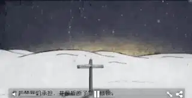
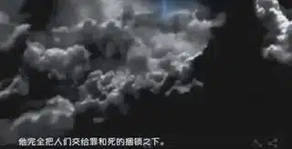
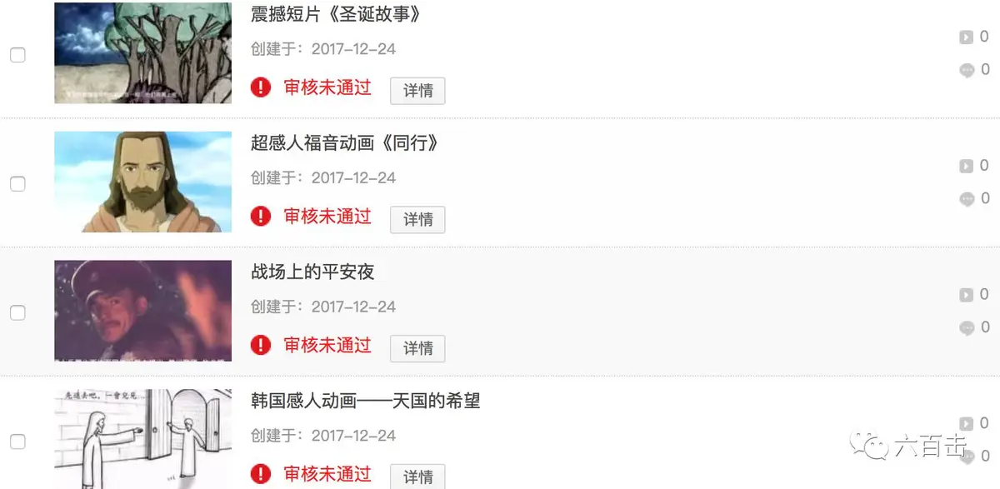

今晚是平安夜，知道大家都很忙，所以给大家来一波圣诞短片。
希望通过短而精的作品来一同纪念和思想耶稣降生。
但是，当我挑选短片的时候，我悲伤地发现，国内网站上几乎没有纯正的圣诞节短片。
世俗化“垃圾”作品倒是很多，标题上打着走心、感动，但电影从始至终没有提到圣诞节要纪念的耶稣。
虾哥不得不感慨，我们真的很聪明，聪明到“取其糟粕，去其精华”。
我们厉害到，能够将古今中外所有的节日都统一成一种模式：睡睡睡、聚聚聚、买买买、吃吃吃、晒晒晒。
这就是消解了神圣价值、坠入到世俗化深渊的荒唐景象，我们硬把高贵的“人”过成了油腻的“猪”。
无奈之下，虾哥上youtube帮大家淘了四部高质量的短片，一同分享给大家。
首先介绍一部动画短片《圣诞故事》，这个短片用不到二十分钟的时间，比较完整地表现了上帝的创造和救赎。
短片跨越了上帝创世、人类堕落、耶稣降生以及末日审判，可以让我们在完整的上帝计划中去更深地理解耶稣的降生。

短片在表现上非常流畅生动，充满了想象力。
比如下面这个表现堕落世界的场景，地面采用大胆的红色，这样的世界仿佛是烈火燃烧的地狱，而人类全都是样式一样的灰色，毫无生气。短片将人类犯罪堕落的景况表现的入木三分。

而更加可贵的是，贯穿其中的讲解内容非常严谨认真。我们可以在视听的享受中清楚地了解基督教信仰和圣诞节的意义。
了解了基本的信仰和圣诞节的意义之后，再来一部感人的动画短片《同行》。
这部短片带入感很强，跟随者男孩的步伐，我们会在他的身上找到很多的共鸣，我们会和他一样，会经历疲惫、困乏和绝望。
短片通过想象力，让耶稣和这位担劳苦重担的男孩相遇，耶稣像陪伴门徒一样陪伴着男孩。
耶稣再次战胜风浪，在海面上行走。
与神同行中，男孩得到了真正的释放和信心。
短片除了背景声，没有对话，伴随着场景的变化去推进男孩逐渐走向信靠。
过程中，穿插了圣经中的原文，可以让我们通过男孩的经历并结合圣经的话语，去更深的理解耶稣是道路、真理和生命。
再来推荐一部韩国感人动画《天国的希望》。
这也是一部手绘动画短片，画风简洁，但却非常温馨可爱，配乐也非常赞。
小男孩排在去往天堂的长队之中，他等着等着有些不耐烦。
小男孩忧愁地问前面的人“还要等多久啊”
前面的朋友喜乐地告诉他“如果你知道你要进入什么样的地方，你一定愿意等待”
他指向前方，让小男孩看向代表永恒的城堡……
短片用很可爱的方式表达了基督徒的盼望，我们的信心会被世界动摇，但是如果你被上帝的荣耀所震撼，你一定会耐心等待必要欢呼。
还有一部是《战场上的平安夜》，严格说这不能说是一部短片，它是一部经典长片的讲解。
但是他的讲解非常精彩，从信仰的角度用三分钟的时间介绍了这个真实事件改编的电影。
一战期间，曾经发生了一件奇迹，平安夜里，德军在战壕的这一边用德语高唱安详宁静的《平安夜》。
英军深受感动，也在另一边唱起《普世欢腾》作为回应。
最后，双方军队放下了武器，拿出自己的面包、罐头一同庆祝平安夜……唯有信仰能跨越种族、阶层以及战争仇恨。
为了更方便地将这些作品分享给大家，大虾连夜上传这些优秀的短片。
不过可惜.......

原来我们傻是因为有人想要让我们傻。
可以让你胡吃海喝，可以让你娱乐至死
但是真相、思想永远都不敢给你。
大虾只能把资源上传到网盘，大家可以关注并回复圣诞短片获取资源。
不论他们怎么抵制封锁，我们依旧要赞美，依旧要纪念耶稣降生，让我们高声歌唱：
圣诞 - ChrisTomlin
《圣诞夜歌》
意大利安东尼亚诺小合唱团《加油耶稣 》
相关推荐：
爸爸，圣诞老人是真的吗？｜ 这是最温暖最智慧的回答
这个圣诞节不得不看的十部电影，你看过几部？
《芳华》| 他那么好却被伤的如此之深
这里没有挑逗你眼目情欲的小鲜肉
也没有挑动你肉体情欲的段子
更没有膨胀你今生骄傲的鸡血
我们只在乎那些最质朴真诚的作品
在那里我们才能恢复真正的想象力
我们也坚信这才是我们真正需要的

ID:Six_hundred_hits
长按二维码，一键关注
【六百击】
-END-
电影评论
尽情分享朋友圈

苹果打赏通道